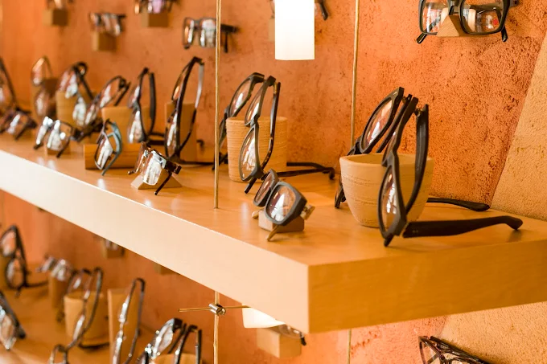
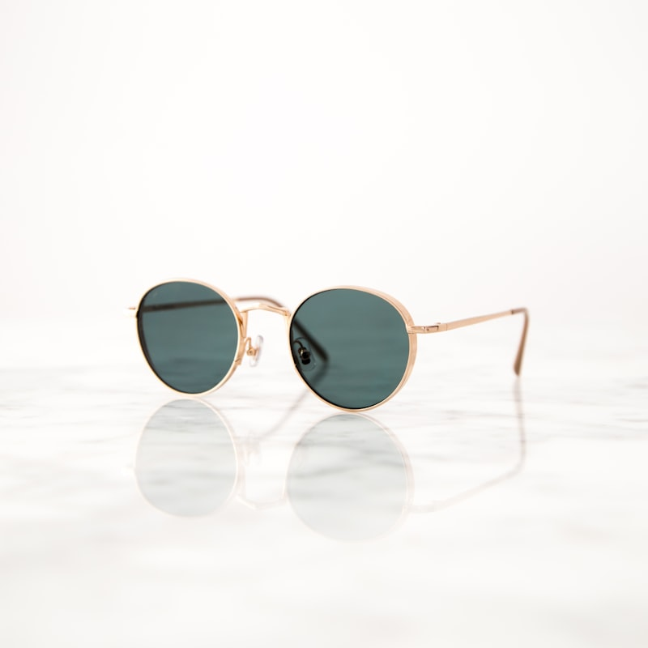

Profesjonalny dobór oprawek
Dobieramy kształt i kolor oprawek do rysów twarzy oraz stylu życia — tak, by okulary były wygodne i wyglądały świetnie.
01
Komputerowe badanie
precyzja w 20 minut
Twój zaufany optyk. Łączymy precyzyjne, komputerowe badanie wzroku z indywidualnym doborem oprawek, które podkreślą Twój styl.
30+
lat doświadczenia
setki zadowolonych klientów
Zaufali nam — pracujemy z najlepszymi markami

100%
zaangażowania w każdą wizytę
Binokl to nowoczesny salon optyczny, w którym profesjonalizm spotyka się z indywidualnym podejściem. Wieloletnie doświadczenie pozwala nam precyzyjnie dobierać szkła i oprawki — tak, aby widzieć dobrze i czuć się ze swoimi okularami wyjątkowo.
Dobieramy kształt i kolor oprawek do rysów twarzy oraz stylu życia — tak, by okulary były wygodne i wyglądały świetnie.
01Nowoczesny sprzęt diagnostyczny pozwala precyzyjnie określić wadę wzroku i dobrać idealnie dopasowane szkła korekcyjne.
02Regulacja, wymiana zauszników, lutowanie i wymiana soczewek — przywracamy Twoim okularom pełną sprawność na miejscu.
03Od ponadczasowej klasyki po najnowsze trendy — w salonie Binokl znajdziesz oprawy i soczewki najwyższej jakości.
Lekkie oprawki i nowoczesne szkła dopasowane do Twojej wady oraz trybu życia.

Ochrona UV w wydaniu, które nie idzie na kompromis ze stylem — także z korekcją.
Miesięczne i jednodniowe soczewki znanych marek wraz z profesjonalnym doborem.
„Świetny optyk, w którym nie tylko znajdziesz ciekawe oprawki, ale dowiesz się bardzo dużo na temat doboru odpowiednich szkieł. Chyba nigdzie nie traktują tak fajnie klienta jak tutaj!"
Bartek K.
Klient salonu
„Najlepszy optyk, do jakiego trafiłam. Pani idealnie dobrała oprawki, tłumacząc, na co dokładnie zwrócić uwagę przy danej wadzie. Jestem zachwycona i polecam z całego serca!"
Aleksandra K.
Klientka salonu
„Za każdym razem jesteśmy bardzo zadowoleni z doboru oprawek jak i szkieł. Fachowa pomoc nie tylko przy zakupie, ale również podczas awarii."
Agata A.
Stała klientka
Umów się na badanie wzroku lub po prostu wpadnij obejrzeć nową kolekcję oprawek.
Zostaw wiadomość — oddzwonimy i zaproponujemy dogodny termin.
Salon Optyczny Binokl
Wyszyńskiego 5a, Piekary Śląskie